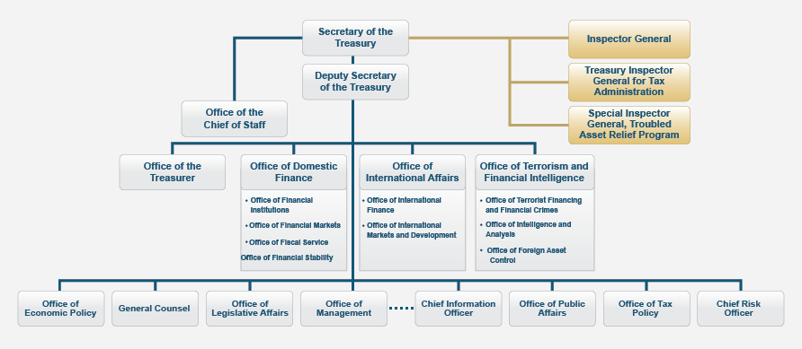

Internship at the digital team of the Department of the Treasury, Departmental Office, I have a huge chance to learn new things and to discover my ability of analyzing based on the technique that I have studied in the University of Maryland. By adopting a new environment of information technology, my internship routine involved in working on migration of Treasury.gov page, analyze data and create of Web form for code.gov. Besides, studying some coding languages such as HTML, CSS were my duties. My internship opened my mind about my career in the future very much because I am able to work in diversities fields which require analytical skills.
THE DEPARTMENT OF THE TREASURY
The Department of the Treasury has two majors: Departmental Offices and the operating bureaus. Its basic functions include managing Federal finances, collecting taxes, duties and monies paid to and due to the U.S and paying all bills of the U.S, currency and coinage, managing Government accounts and the public debt, supervising national banks and thrift institutions, advising on domestic and international financial, monetary, economics, trade and tax policy, enforcing Federal finance and tax law, investigating and prosecuting tax evaders, counterfeiters, and forgers. It plays important roles to manage the financial and currency market along with Federal Reserve, and the fiscal budget for the government's activities.
TREASURY CHART
How to find Degital Team office